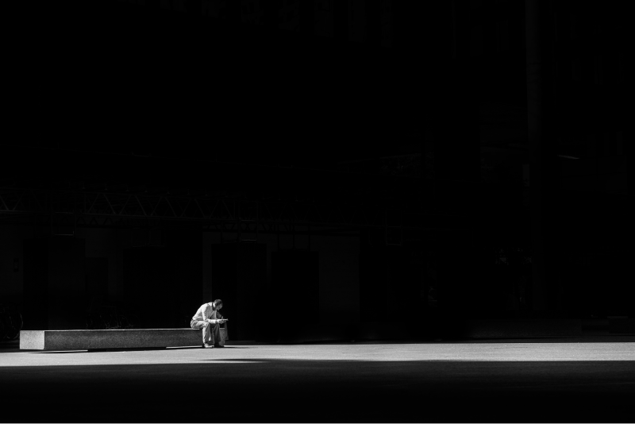

2020
Landscape

Art of Black & White
Photography
Portraits
Landscape
Modern
Brand Identities
Art Direction
Communication
We are "Art of Black & White", We opened our doors in 2003 and quickly emerged as an industry leader, receiving many major awards, including World Press, Overseas Press Club, American Photography, PDN, and Communication Arts. Redux takes pride in being a strong advocate for the power of modern photography and the creative individual’s ability to effect change. Redux artists have photographed portraits of world leaders, CEOs, politicians, athletes and celebrities. They have documented everything from social issues such as healthcare, immigration, and poverty, to global issues such as the economy, the environment, and war. In addition, our extensive travel, food, and lifestyle photography showcases Redux as an Industry leader. Our regular editorial clients include Afar, Forbes, Fortune, ESPN, The New York Times Magazine, Esquire, GQ, GEO, Time, Newsweek, The New Yorker, Reader’s Digest, Travel & Leisure, and many more. Commercial shoots include contemporary annual reports for Goldman Sachs, USAA, and ad campaigns for PNC Bank, Siemens and Zappos. Along with our network of partner agencies around the world, Redux continues to grow and offers complete production and multimedia services for clients.
Landscape
Landscape

Landscape
Landscape

Landscape